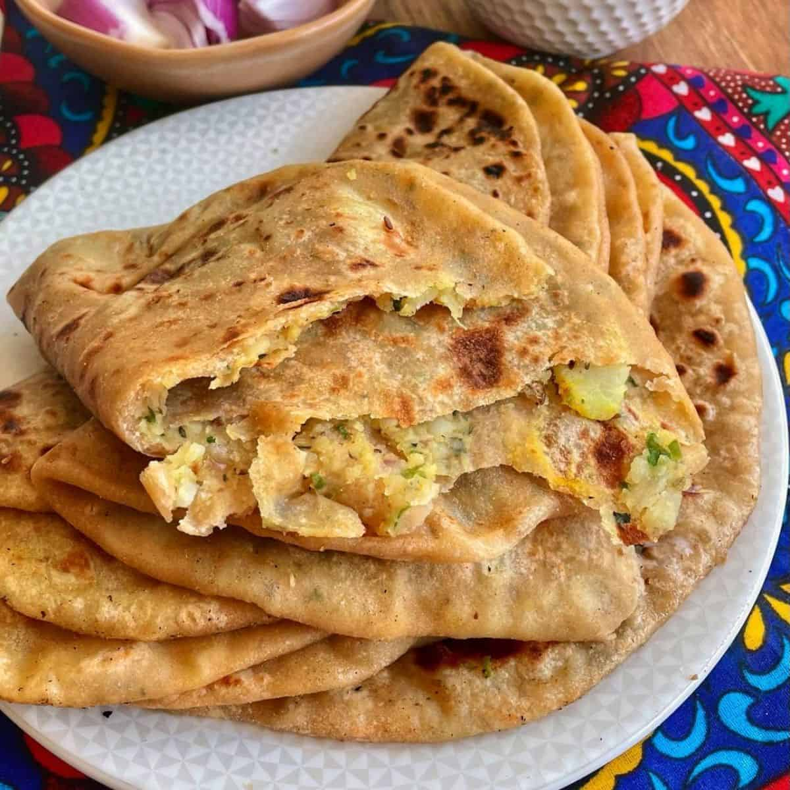

Aloo Paratha

Aloo Paratha is a popular Indian flatbread stuffed with a savory, spiced
mashed potato filling. It's a staple breakfast in many North Indian homes
and is often served with white butter, yogurt, or pickle.
Ingredients
For the Dough:
- 2 cups whole wheat flour (atta)
- Salt to taste
- Water, as required
- Oil or ghee, for kneading and cooking
For the Potato Filling:
- 3-4 medium potatoes, boiled, peeled, and mashed
- 1-2 green chilies, finely chopped
- 1/4 - 1/2 teaspoon Kashmiri chili powder or cayenne pepper
- 1/4 - 1/2 teaspoon garam masala
- 1/2 - 1 teaspoon dry mango powder (amchur powder)
- 1 tablespoon finely chopped fresh coriander leaves
- Salt, as required
Steps
-
In a large bowl, combine the whole wheat flour and salt. Gradually add
water and knead to form a soft, pliable dough. Add a little oil or ghee
and knead again until absorbed. Cover the dough and let it rest for at
least 20-30 minutes.
-
Boil the potatoes until they are completely done. Once cooled, peel the
potatoes and mash them thoroughly. Add the chopped green chilies, chili
powder, garam masala, dry mango powder, fresh coriander, and salt to the
mashed potatoes. Mix all the ingredients gently until well combined.
-
Divide the rested dough and potato filling into equal-sized balls.
-
Take one dough ball and flatten it slightly. Roll it into a small disc,
about 4-5 inches in diameter. Place a portion of the potato filling in
the center of the rolled dough. Bring the edges of the dough together
over the stuffing and seal the filling. Gently flatten the stuffed ball
with your fingers to spread the filling evenly.
-
Dust the stuffed dough ball with flour and carefully roll it out into a
round paratha of your desired thickness.
-
Heat a tawa (griddle) over medium heat. Once hot, place a rolled
paratha on the tawa. Cook for about a minute or two until the base is
partially cooked. Flip the paratha and apply oil or ghee on the cooked
side. Flip again and apply oil or ghee on the other side. Press gently
with a spatula and cook until both sides have golden brown spots.
HOME